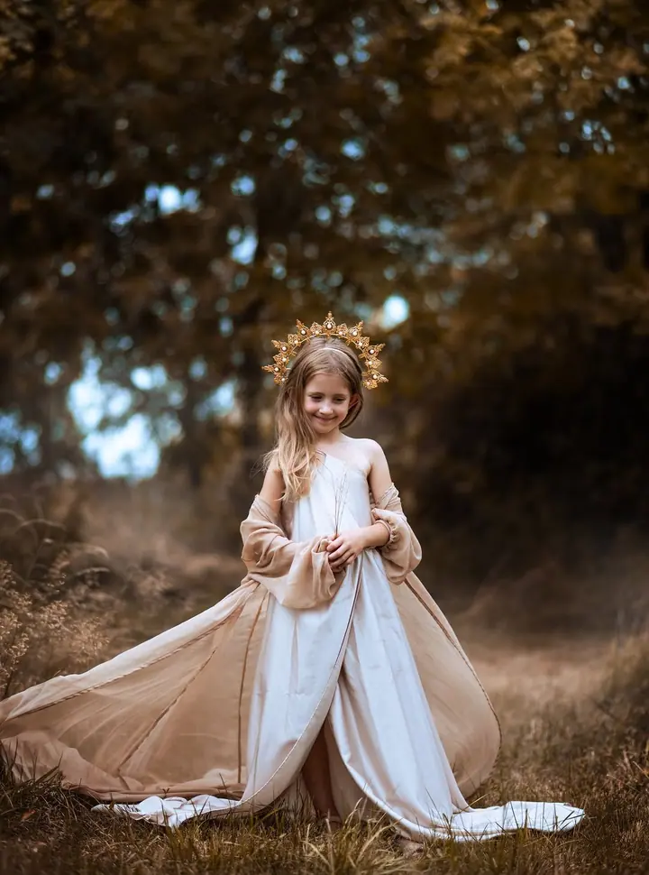
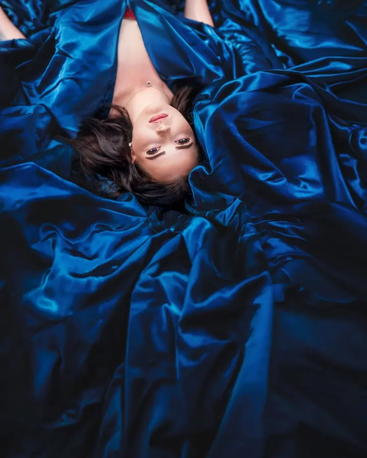
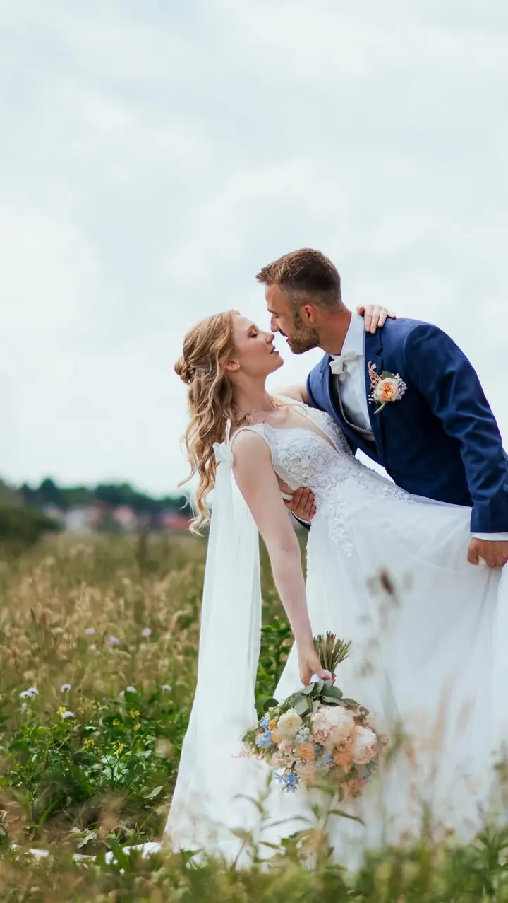

Rodinné a těhotenské focení
Fotíme venku na mých oblíbených místech v lese u Týniště, u vás doma nebo v ateliéru. Dostanete 12 retušovaných fotek, každou v barevném i černobílém provedení.

Jmenuji se Monika Poslušná a jsem fine art fotografka z Týniště nad Orlicí. Fotím rodiny a děti, pohádkové portréty i svatby v Hradci Králové a ve východních Čechách.
Rezervovat termínFotit jsem začala v roce 2015, těsně před narozením první dcery. Vždycky mě bavilo malování a fotografie, ale že se tím jednou budu živit, by mě ani ve snu nenapadlo. Přišlo to tak nějak samo a já jsem za to moc vděčná. Mám ráda přírodu, lidi a pohádky a tohle všechno se do mých fotek promítá.


Fotím hlavně venku, na svých oblíbených místech v lese u Týniště. Ke své práci přistupuji tak trochu rodinně: seznámíme se, pokecáme, ukážu vám místa, která miluji, a užijeme si spolu klid v lese. Mám ráda spíš vážnější výrazy, ale když chcete veselé a vysmáté fotky, stačí to říct předem.
Když zrovna nefotím zákazníky, fotím své dvě holčičky. Miluju kafe a kavárny, a když si řeknete, nakreslím vám obrázek do cappuccina. V roce 2024 jsem absolvovala kurz pracovníka grafického studia, takže u mě kromě fotek objednáte i loga, vizitky nebo bannery. A od roku 2026 nově přidáváme video.
Co fotím
Fotíme venku na mých oblíbených místech v lese u Týniště, u vás doma nebo v ateliéru. Dostanete 12 retušovaných fotek, každou v barevném i černobílém provedení.
Fine art portrét s náročnější postprodukcí, který se dá spojit s klasickým portrétním focením. Můžu vám zapůjčit šaty nebo zapálit dýmovnici, aby fotka působila jako z pohádky.
Na svatbu kromě balíčku mini přijíždíme ve dvou fotografech, takže máte víc úhlů pohledu i víc fotek. Balíčky jsou od 3 do 12 hodin na svatbě.
Business portréty, fotky pro sociální sítě a firemní časopisy, plakáty i billboardy. Fotím také firemní akce a nemovitosti.
Postup
Napište mi, jaké focení si představujete a jaké fotky máte rádi. Portréty a rodinné focení domlouvám od pondělí do pátku, víkendy patří svatbám a oslavám.
Poradím vám, co si vzít na sebe. Klidně přineste celou tašku oblečení, na místě vybereme to nejlepší, a pro dámy mám k zapůjčení sukně, šaty i látky.
Samotné focení trvá zhruba 1 až 2 hodiny. Fotíme v lese u Týniště, na vašem oblíbeném místě, u vás doma nebo v ateliéru.
Fotky si vyberete z 50 až 100 náhledů, nebo výběr necháte na mně. Do 3 až 4 týdnů dostanete 12 retušovaných fotek v plném rozlišení.
Otázky
Nejlepší je oblečení bez výrazných vzorů a potisků, na rodinném focení se zkuste sladit. Na portrét doporučuji šaty, sukni nebo krásnou látku a lehké boty na přezouvání.
Když trochu poprchává, není důvod focení posouvat, na fotky to nemá vliv. Při opravdu ošklivém počasí můžeme fotit uvnitř nebo obojí zkombinovat.
Balíček s 12 retušovanými fotkami stojí 3100 Kč, každá fotka je v barevném i černobílém provedení. Mini focení se 6 fotkami stojí 1900 Kč a nalíčení si můžete přiobjednat za 500 Kč.
Na svatbu kromě balíčku mini přijíždíme ve dvou fotografech, takže budete mít víc úhlů pohledu i víc fotek. Hotové fotky odevzdávám na flash disku.